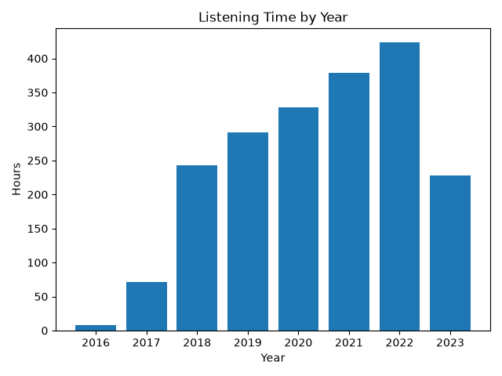
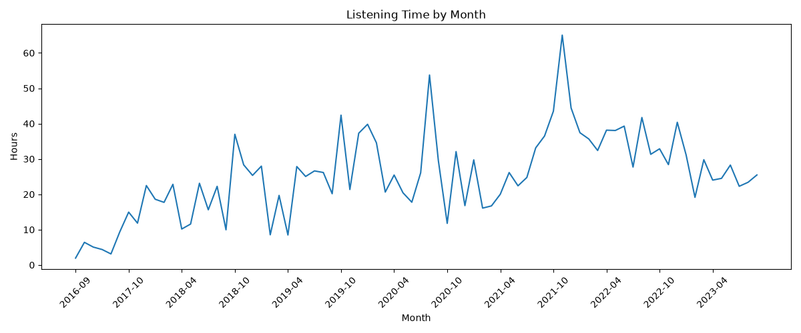

| Rank | Artist | Hours |
|---|---|---|
| 1 | Troye Sivan | 108.74 |
| 2 | Ed Sheeran | 84.2 |
| 3 | Lana Del Rey | 65.84 |
| 4 | Harry Styles | 56.11 |
| 5 | Conan Gray | 40.33 |
| 6 | Justin Bieber | 34.0 |
| 7 | One Direction | 31.34 |
| 8 | Taylor Swift | 30.95 |
| 9 | Lauv | 30.82 |
| 10 | Shawn Mendes | 30.53 |
| Rank | Artist | Hours |
|---|---|---|
| 1 | Queen | 1.05 |
| 2 | Coldplay | 0.8 |
| 3 | The Weeknd | 0.57 |
| 4 | Ed Sheeran | 0.49 |
| 5 | Maroon 5 | 0.48 |
| 6 | OneRepublic | 0.42 |
| 7 | fun. | 0.34 |
| 8 | Vance Joy | 0.24 |
| 9 | Twenty One Pilots | 0.17 |
| 10 | The Chainsmokers | 0.17 |
| Rank | Artist | Hours |
|---|---|---|
| 1 | Ed Sheeran | 9.29 |
| 2 | Justin Bieber | 4.13 |
| 3 | Charlie Puth | 3.57 |
| 4 | Martin Garrix | 3.23 |
| 5 | Liam Payne | 2.44 |
| 6 | Camila Cabello | 2.4 |
| 7 | ZAYN | 2.05 |
| 8 | Jonas Blue | 1.9 |
| 9 | Dua Lipa | 1.76 |
| 10 | Enrique Iglesias | 1.74 |
| Rank | Artist | Hours |
|---|---|---|
| 1 | Ed Sheeran | 27.26 |
| 2 | Troye Sivan | 19.38 |
| 3 | Justin Bieber | 7.93 |
| 4 | Shawn Mendes | 7.31 |
| 5 | Charlie Puth | 7.11 |
| 6 | Selena Gomez | 6.86 |
| 7 | G-Eazy | 4.97 |
| 8 | Marshmello | 4.96 |
| 9 | Liam Payne | 4.46 |
| 10 | Dido | 4.34 |
| Rank | Artist | Hours |
|---|---|---|
| 1 | Troye Sivan | 40.94 |
| 2 | Billie Eilish | 17.6 |
| 3 | One Direction | 17.01 |
| 4 | Ed Sheeran | 12.22 |
| 5 | Lauv | 9.4 |
| 6 | Shawn Mendes | 7.2 |
| 7 | Jonas Brothers | 6.49 |
| 8 | 5 Seconds of Summer | 5.56 |
| 9 | James Arthur | 5.47 |
| 10 | Alec Benjamin | 5.22 |
| Rank | Artist | Hours |
|---|---|---|
| 1 | Troye Sivan | 21.56 |
| 2 | Harry Styles | 11.16 |
| 3 | Lauv | 10.46 |
| 4 | Ed Sheeran | 9.44 |
| 5 | Alec Benjamin | 6.8 |
| 6 | All Time Low | 5.62 |
| 7 | James Arthur | 5.53 |
| 8 | One Direction | 4.56 |
| 9 | Justin Bieber | 4.46 |
| 10 | Lewis Capaldi | 4.38 |
| Rank | Artist | Hours |
|---|---|---|
| 1 | Olivia Rodrigo | 24.71 |
| 2 | Ed Sheeran | 14.39 |
| 3 | Conan Gray | 10.55 |
| 4 | The Weeknd | 10.21 |
| 5 | Troye Sivan | 10.02 |
| 6 | Lil Nas X | 8.37 |
| 7 | Justin Bieber | 7.32 |
| 8 | Miley Cyrus | 6.55 |
| 9 | Why Don't We | 6.05 |
| 10 | Dua Lipa | 5.96 |
| Rank | Artist | Hours |
|---|---|---|
| 1 | Harry Styles | 32.38 |
| 2 | Conan Gray | 26.04 |
| 3 | Mergui | 13.93 |
| 4 | Troye Sivan | 12.79 |
| 5 | Dua Lipa | 10.21 |
| 6 | Sia | 9.09 |
| 7 | Ed Sheeran | 8.57 |
| 8 | Nunu | 8.54 |
| 9 | Taylor Swift | 7.35 |
| 10 | Justin Bieber | 6.98 |
| Rank | Artist | Hours |
|---|---|---|
| 1 | Lana Del Rey | 63.6 |
| 2 | Taylor Swift | 11.36 |
| 3 | Miley Cyrus | 7.83 |
| 4 | Sia | 7.74 |
| 5 | Harry Styles | 6.82 |
| 6 | Beyoncé | 6.25 |
| 7 | Mergui | 4.46 |
| 8 | One Direction | 4.16 |
| 9 | Troye Sivan | 4.04 |
| 10 | Carakukly | 3.68 |
| Rank | Song | Artist | Hours |
|---|---|---|---|
| 1 | good 4 u | Olivia Rodrigo | 5.02 |
| 2 | Angel Baby | Troye Sivan | 4.98 |
| 3 | Strawberries & Cigarettes | Troye Sivan | 4.94 |
| 4 | Better Now - Recorded At Spotify Studios NYC | Troye Sivan | 4.94 |
| 5 | Born To Die | Lana Del Rey | 4.91 |
| 6 | Plastic Hearts | Miley Cyrus | 4.88 |
| 7 | פרפרים | Carakukly | 4.66 |
| 8 | Someone You Loved | Lewis Capaldi | 4.37 |
| 9 | lovely (with Khalid) | Billie Eilish | 4.35 |
| 10 | YOUTH - Gryffin Remix | Troye Sivan | 4.25 |
| Rank | Song | Artist | Plays |
|---|---|---|---|
| 1 | Strawberries & Cigarettes | Troye Sivan | 174 |
| 2 | good 4 u | Olivia Rodrigo | 151 |
| 3 | Plastic Hearts | Miley Cyrus | 147 |
| 4 | Better Now - Recorded At Spotify Studios NYC | Troye Sivan | 140 |
| 5 | People Watching | Conan Gray | 140 |
| 6 | Happy Little Pill | Troye Sivan | 139 |
| 7 | Someone You Loved | Lewis Capaldi | 136 |
| 8 | Maniac | Conan Gray | 136 |
| 9 | brutal | Olivia Rodrigo | 127 |
| 10 | The Good Side | Troye Sivan | 126 |
| Rank | Album | Artist | Hours |
|---|---|---|---|
| 1 | Blue Neighbourhood | Troye Sivan | 34.6 |
| 2 | SOUR | Olivia Rodrigo | 28.5 |
| 3 | Harry's House | Harry Styles | 26.79 |
| 4 | Born To Die - The Paradise Edition | Lana Del Rey | 26.38 |
| 5 | Bloom | Troye Sivan | 26.27 |
| 6 | x | Ed Sheeran | 20.62 |
| 7 | Fine Line | Harry Styles | 18.32 |
| 8 | Kid Krow | Conan Gray | 17.84 |
| 9 | ÷ | Ed Sheeran | 16.66 |
| 10 | Norman Fucking Rockwell! | Lana Del Rey | 15.93 |
| Year | Hours |
|---|---|
| 2016 | 8.35 |
| 2017 | 71.21 |
| 2018 | 242.49 |
| 2019 | 291.51 |
| 2020 | 328.6 |
| 2021 | 378.46 |
| 2022 | 423.32 |
| 2023 | 227.94 |

| Month | Hours |
|---|---|
| 2016-09 | 1.94 |
| 2016-10 | 6.41 |
| 2017-06 | 5.06 |
| 2017-07 | 4.38 |
| 2017-08 | 3.12 |
| 2017-09 | 9.39 |
| 2017-10 | 14.95 |
| 2017-11 | 11.84 |
| 2017-12 | 22.47 |
| 2018-01 | 18.6 |
| 2018-02 | 17.71 |
| 2018-03 | 22.82 |
| 2018-04 | 10.17 |
| 2018-05 | 11.58 |
| 2018-06 | 23.12 |
| 2018-07 | 15.62 |
| 2018-08 | 22.25 |
| 2018-09 | 9.96 |
| 2018-10 | 36.98 |
| 2018-11 | 28.33 |
| 2018-12 | 25.35 |
| 2019-01 | 27.96 |
| 2019-02 | 8.54 |
| 2019-03 | 19.68 |
| 2019-04 | 8.48 |
| 2019-05 | 27.85 |
| 2019-06 | 25.04 |
| 2019-07 | 26.62 |
| 2019-08 | 26.16 |
| 2019-09 | 20.16 |
| 2019-10 | 42.38 |
| 2019-11 | 21.36 |
| 2019-12 | 37.27 |
| 2020-01 | 39.8 |
| 2020-02 | 34.56 |
| 2020-03 | 20.62 |
| 2020-04 | 25.45 |
| 2020-05 | 20.43 |
| 2020-06 | 17.75 |
| 2020-07 | 26.08 |
| 2020-08 | 53.75 |
| 2020-09 | 29.51 |
| 2020-10 | 11.77 |
| 2020-11 | 32.08 |
| 2020-12 | 16.79 |
| 2021-01 | 29.74 |
| 2021-02 | 16.09 |
| 2021-03 | 16.71 |
| 2021-04 | 20.02 |
| 2021-05 | 26.15 |
| 2021-06 | 22.4 |
| 2021-07 | 24.76 |
| 2021-08 | 33.13 |
| 2021-09 | 36.49 |
| 2021-10 | 43.52 |
| 2021-11 | 65.03 |
| 2021-12 | 44.42 |
| 2022-01 | 37.42 |
| 2022-02 | 35.65 |
| 2022-03 | 32.39 |
| 2022-04 | 38.14 |
| 2022-05 | 38.05 |
| 2022-06 | 39.29 |
| 2022-07 | 27.7 |
| 2022-08 | 41.73 |
| 2022-09 | 31.31 |
| 2022-10 | 32.87 |
| 2022-11 | 28.39 |
| 2022-12 | 40.38 |
| 2023-01 | 31.12 |
| 2023-02 | 19.13 |
| 2023-03 | 29.78 |
| 2023-04 | 24.01 |
| 2023-05 | 24.51 |
| 2023-06 | 28.26 |
| 2023-07 | 22.26 |
| 2023-08 | 23.39 |
| 2023-09 | 25.47 |
